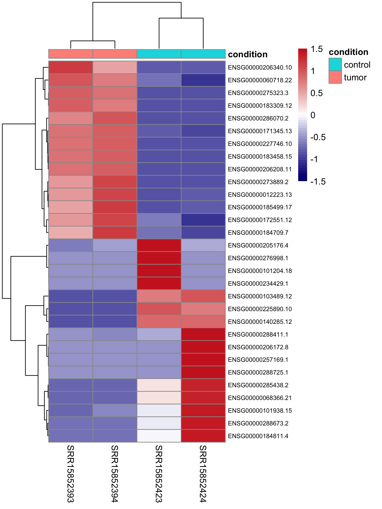

RNA-Seq Differential Expression Pipeline
Built a reproducible RNA-seq pipeline (SRA raw data, QC, trimming, Salmon, DESeq2) to identify differentially expressed genes between tumor and normal samples. Produced PCA, heatmap, and volcano plots.